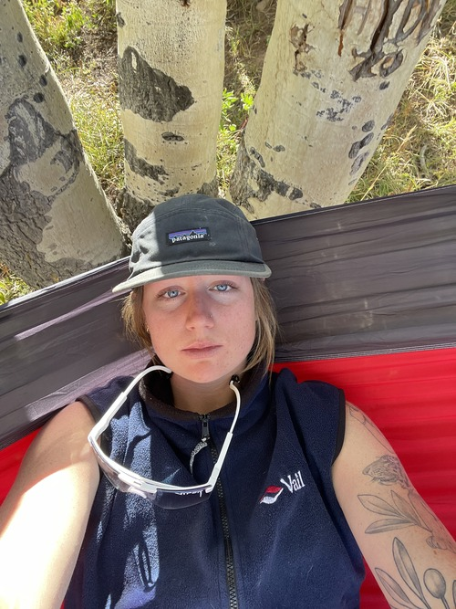
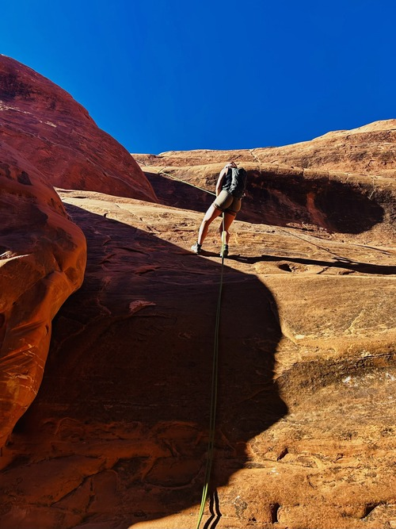
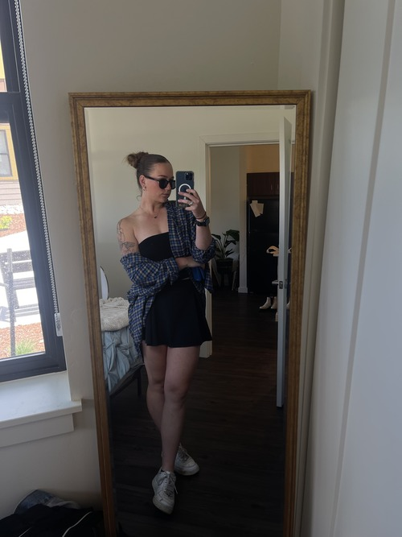
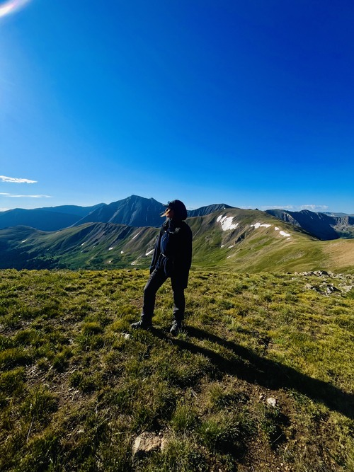
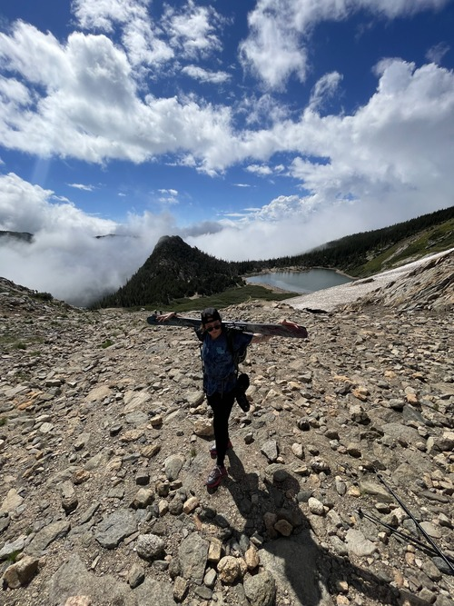
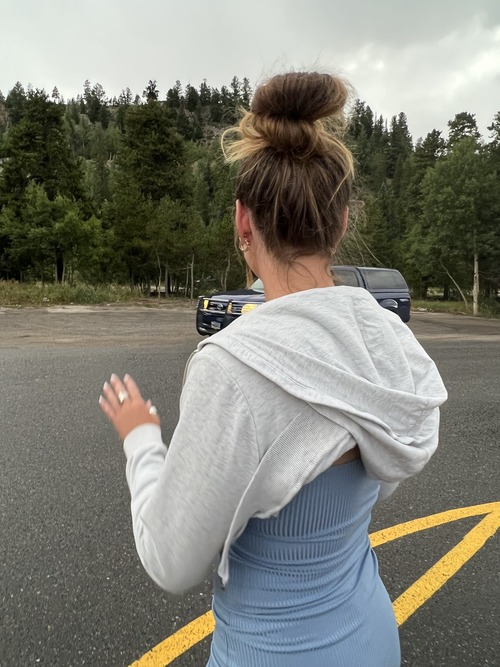

One of my favorite things to do is to relax in a hammock on a sunny day.

I got a chance to visit Moab earlier this year. The Canyons were so beautiful, and I got the chance to repell down many of them.

Style is very important to me. It allows me to show my personality, and express my feelings.

Hiking is so fun. Not only is it a great exercise but it can bring you to many places that not a lot of people have been before

Early season skiing is so fun. Even though the snow isnt always the greatest. The journey up the mountain is what counts. Where else can you ski almost everyday of the year other than Colorado.

I love this picture because it was on my birthday. I had so much fun and turning 23 in Breckenridge was a whole experience itself. Also
the dress I wore was one of my favorites.